In this example we consider the flow in a 2D channel which is partially obstructed by an elastic leaflet – the FSI generalisation of the Navier-Stokes problem in which the motion of the leaflet is prescribed. A particular feature of this problem is that the leaflet (modelled as a thin-walled beam structure) is totally immersed in the fluid and is therefore exposed to the fluid traction from both sides.
The problem presented here was used as one of the test cases for oomph-lib's FSI preconditioner; see
In this tutorial we concentrate on the problem formulation. The application of the preconditioner is discussed elsewhere – the required source code is contained in the driver code.
The Problem
The figure below shows a sketch of the problem: A 2D channel of height  and length
and length  is partially occluded by a thin-walled elastic leaflet of height 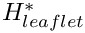. (As usual, we use asterisks to distinguish dimensional quantities from their non-dimensional equivalents to be introduced later.) We assume that the leaflet is sufficiently thin so that, as far as the boundary conditions for the fluid are concerned, the leaflet can be assumed to be infinitely thin. This allows us to parametrise its shape by a single Lagrangian coordinate 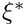. Hence we write the position vector to a material point on the leaflet as 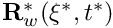. A pulsatile Poiseuille flow whose mean velocity fluctuates between 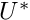 and 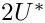 is imposed at the upstream end of the channel. The outflow is assumed to be parallel and axially traction-free.
is partially occluded by a thin-walled elastic leaflet of height 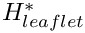. (As usual, we use asterisks to distinguish dimensional quantities from their non-dimensional equivalents to be introduced later.) We assume that the leaflet is sufficiently thin so that, as far as the boundary conditions for the fluid are concerned, the leaflet can be assumed to be infinitely thin. This allows us to parametrise its shape by a single Lagrangian coordinate 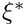. Hence we write the position vector to a material point on the leaflet as 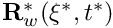. A pulsatile Poiseuille flow whose mean velocity fluctuates between 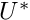 and 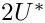 is imposed at the upstream end of the channel. The outflow is assumed to be parallel and axially traction-free.

We non-dimensionalise all length and coordinates on the channel width,  , time on the natural timescale of the flow, 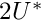, the velocities on the (minimum) mean velocity,
, time on the natural timescale of the flow, 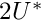, the velocities on the (minimum) mean velocity,
, and the pressure on the viscous scale.
The fluid flow is then governed by the non-dimensional Navier-Stokes equations
![\[ Re \left( St \frac{\partial u_i}{\partial t} + u_j \frac{\partial u_i}{\partial x_j} \right) = - \frac{\partial p}{\partial x_i} + \frac{\partial }{\partial x_j} \left[ \left( \frac{\partial u_i}{\partial x_j} + \frac{\partial u_j}{\partial x_i} \right) \right], \]](form_9.png)
where 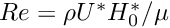 and  , and
, and
subject to a time-periodic, parabolic inflow with non-dimensional period  ,
,
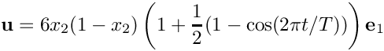
in the inflow cross-section; parallel, axially-traction-free outflow at the outlet; and no-slip on the stationary channel walls,  . The no-slip condition on the leaflet is
. The no-slip condition on the leaflet is
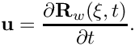
We model the leaflet as a thin-walled, massless, elastic Kirchhoff-Love beam of wall thickness  . The beam's effective (1D) elastic modulus is given by 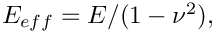 where
. The beam's effective (1D) elastic modulus is given by 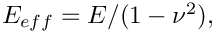 where  and 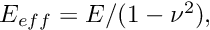 are its 3D Young's modulus and Poisson's ratio, respectively. The beam's deformation is governed by the principle of virtual displacements, discussed in detail in another tutorial. As in the Navier-Stokes equations, we scale all lengths in the beam problem on the channel's width, 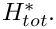 The non-dimensional position vector 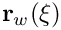 to the undeformed wall is then given by
and 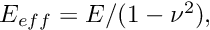 are its 3D Young's modulus and Poisson's ratio, respectively. The beam's deformation is governed by the principle of virtual displacements, discussed in detail in another tutorial. As in the Navier-Stokes equations, we scale all lengths in the beam problem on the channel's width, 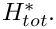 The non-dimensional position vector 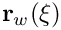 to the undeformed wall is then given by
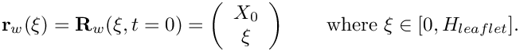
Our non-dimensionalisation of the principle of virtual displacements requires all stresses and tractions to be non-dimensionalised on the beam's (effective 1D) elastic modulus, 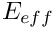. The non-dimensional load vector 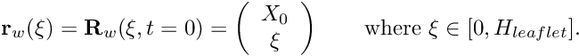 that acts on the leaflet (combining the fluid tractions acting on its front and back faces) is then given by
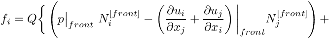
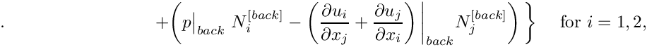
where
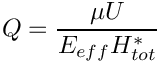
is the ratio of the fluid pressure scale, 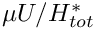 , used to non-dimensionalise the Navier-Stokes equations, to the beam's effective elastic modulus, . The parameter 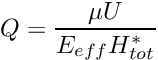 therefore indicates the strength of the fluid-structure interaction. In particular, if 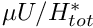 the leaflet does not "feel" the fluid traction. 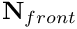 and 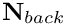 are the outer unit normals on the "front" and "back" faces of the deformed leaflet, as shown in this sketch of the non-dimensional version of the problem:

Results
The figure below shows (a) a snapshot of the flow field
(pressure contours and instantaneous streamlines) and (b) the time-trace of the horizontal position of the leaflet's tip for a Reynolds number of 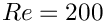, a non-dimensional period of 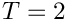, and an interaction parameter of 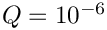. Following the decay of initial transients the leaflet performs periodic large-amplitude oscillations with the period of the pulsating inflow. Large velocity gradients develop at the front of the leaflet and in the shear layer that emanates from its tip and separates the recirculating flow region behind the leaflet from the main flow. Fig. (c) illustrates the non-uniform mesh refinement and shows the improved resolution in the high-shear regions, particularly near the leaflet's tip where the pressure is singular. The mesh was continuously adapted throughout the simulation and contained an average of about 32,000 degrees of freedom. This is a fraction of the 1,324,343 degrees of freedom that would be required to achieve the same local resolution via uniform mesh refinement.
The corresponding animation illustrates the algebraic node update strategy (implemented with an AlgebraicMesh, discussed in more detail in another tutorial) and the evolution of the flow field. Note that the instantaneous streamlines intersect the (impermeable) leaflet because the leaflet is not stationary. The animation shows how the mesh adapts itself to changes in the flow field – using much smaller elements in high-shear regions, including the artificial outflow boundary layer that is created by the imposition of parallel outflow in a region where the flow is far from fully-developed.
The global parameters
As usual we use a namespace to define the problem parameters: The Reynolds number and its product with the Strouhal number (both initialised to 50),
the leaflet's non-dimensional wall thickness, 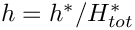, and the FSI parameter,
and the parameters that define the magnitude of the pulsating inflow.
The undeformed leaflet
We use a GeomObject to describe the initial, stress-free shape of the elastic leaflet: a vertical straight line. The member function d2position(...) provides the first and second derivatives of the position vector, as required by the variational principle that governs the beam's deformation; see the beam theory tutorial for details.
The driver code
As with most time-dependent demo codes, the specification of a non-zero number of command line arguments will be interpreted as the code being run as part of oomph-lib's self-test in which case only a few timesteps will be performed. Therefore we start by storing the command line arguments in the namespace CommandLineArgs to make them accessible throughout the code.
Next we specify the geometry and mesh parameters, and build the Problem object, using the AlgebraicElement version of the two-dimensional RefineableQTaylorHoodElements.
We prepare a DocInfo object and open a trace file to document the system's evolution.
Next we assign the timestepping parameters (using fewer timesteps if the code is run during a self-test) and document the system's initial state which provides the initial guess for the Newton iteration in the subsequent steady solve.
We wish to start the time-dependent simulation from an initial condition that corresponds to the steady solution of the problem with unit influx (i.e. the steady solution obtained if the time-dependent boundary condition that is applied at the inlet is held fixed at its value for 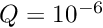). For the required Reynolds number of 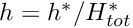, the currently assigned initial guess (zero velocity and pressure, with the wall
in its undeformed position) is "too far" from the actual solution and the Newton method would diverge (try it!). Therefore we generate the initial steady solution in a preliminary sequence of steady computations in which we first compute the solution for a Reynolds number of 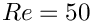 (for this value the Newton method does converge). This solution is then used as the initial guess for the computation at 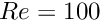, etc. We allow for up to 3 mesh adaptations for each Reynolds number to allow the mesh to adapt itself to the flow conditions before starting the time-dependent run.
Finally, we start the proper timestepping procedure, allowing for one mesh adaptation per timestep and suppressing the re-assignment of the initial condition after the mesh adaptation by setting the first flag to false.
The Problem class
The Problem class contains the usual member functions, most of which are either empty or explained in more detail below.
Two member functions are implemented here: The function actions_before_implicit_timestep() updates the time-dependent velocity profile at the upstream boundary (boundary 3; see the enumeration of the mesh boundaries in the ChannelWithLeafletMesh):
Since the node-update is performed by an algebraic node-update procedure the nodal positions in the fluid mesh must be updated whenever any of the (solid) degrees-of-freedom change. This is done automatically during the computation of the shape derivatives (implemented in the AlgebraicElement wrapper class described another tutorial), but an additional node update must be performed when the unknowns are updated by the Newton solver. This is achieved by performing a further node-update in the function actions_before_newton_convergence_check():
The private member data contains the usual pointers to the Problem's two sub-meshes, the pointer to GeomObject that represents the leaflet, and the total height of the channel.
The problem constructor
We start the problem construction by creating two timesteppers: A BFD<2> timestepper for the fluid and the fake timestepper Steady<2> for the (massless) solid. (Recall that timesteppers from the Steady family return zero time-derivatives but keep track of the past histories. These are needed during the adaptive refinement of the fluid mesh: when assigning the history of the previous nodal positions for newly created fluid nodes, we must evaluate the position of the leaflet at previous timesteps; this is discussed in more detail in another tutorial.)
Next we create the mesh of 1D Hermite beam elements that represents the leaflet, passing a pointer to an instance of the UndeformedLeaflet to its constructor.
The wall mesh defines the geometry of the deformed leaflet, therefore we create a GeomObject representation of that mesh, using the MeshAsGeomObject class, and pass it to the constructor of the fluid mesh:
We specify an error estimator for the fluid mesh and add both meshes to the Problem before combining them into a global mesh.
Dirichlet conditions (prescribed velocity) are applied on virtually all boundaries of the fluid domain (prescribed inflow at the inlet; zero velocity on the rigid channel walls; fluid velocity prescribed by the wall motion on the leaflet), apart from the outflow (boundary 1; see the enumeration of the mesh boundaries in the ChannelWithLeafletMesh) where the axial velocity is unknown (and determined indirectly by the "axially-traction-free" condition) while the vertical velocity has to be set to zero to ensure parallel outflow.
Next we assign the parabolic velocity profile at the inlet (recall that all values are initialised to zero so no further action is required on any of the other Dirichlet boundaries).
The leaflet is clamped at its lower end so we pin its 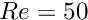- and  -positions, and impose a vertical slope by setting 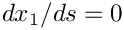 (where s is the local coordinate along the element; see the discussion of the boundary conditions for beam elements in another tutorial for details).
-positions, and impose a vertical slope by setting 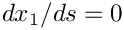 (where s is the local coordinate along the element; see the discussion of the boundary conditions for beam elements in another tutorial for details).
Next, we complete the build of the fluid elements by passing pointers to the relevant physical parameters to the elements and pinning any redundant pressure degrees of freedom; see another tutorial for details.
When completing the build of the wall elements we use the function enable_fluid_loading_on_both_sides() to indicate that the leaflet is completely immersed in the fluid so that fluid tractions act on both of its faces. When setting up the fluid-structure interaction below, one of the two faces will have to be identified as the "front" (face 0) and the other one as the "back" (face 1). The function normal_points_into_fluid() allows us to indicate if the outer unit normal on the leaflet (as computed by FSIHermiteBeamElement::get_normal(...) points into the fluid, when viewed from the "front" face. Here it does not – see Further comments for more details on this slightly subtle point).
We can now set up the fluid structure interaction. The motion of the leaflet determines the fluid velocity of all nodes on boundaries 4 and 5 via the no-slip condition (see the enumeration of the mesh boundaries in the ChannelWithLeafletMesh). The fluid velocity at these nodes can be updated automatically whenever a fluid node is moved (by the fluid mesh's node-update function) by specifying an auxiliary node update function.
Finally, we have to determine which fluid elements are adjacent to the two faces of the FSIHermiteBeamElements to allow them to compute the fluid traction they are exposed to. This is done separately for the "front" and "back" faces. The "front" of the leaflet (face 0) is assumed to coincide with the fluid mesh boundary 4; the "back" (face 1) is assumed to coincide with the fluid mesh boundary 5.
Following the setup of the fluid-structure interaction we assign the equation numbers:
Actions after the mesh adaptation
Once the fluid mesh has been adapted we free all pressure degrees of freedom and then (re-)pin any redundant ones; see the discussion in another tutorial for details.
Any newly created fluid nodes on the leaflet (i.e. on the fluid mesh boundaries 4 and 5) must be subjected to the automatic application of the no-slip condition. For simplicity we (re-)specify the auxiliary node update function pointer for all of the nodes on those boundaries.
Finally, the adaptation of the fluid mesh may change the fluid elements that are adjacent to the wall elements so we re-generate the corresponding FSI lookup schemes.
Post Processing
The function doc_solution(...) documents the results. We output the fluid and solid meshes and document selected additional quantities in the trace file.
The remaining output is created to determine which elements are located next to the fluid mesh boundaries 4 and 5 (Yes, the documentation for the mesh illustrates the enumeration of the mesh boundaries but we generally prefer to be paranoid; see Further comments ), and to establish the direction of the unit normal on the beam.
Further comments and exercises
Further comments
- How does one identify the "front" and "back" of an immersed beam structure?
When setting up the fluid-structure interaction in the The problem constructor we had to associate the fluid mesh boundaries 4 and 5 (the boundaries adjacent to the leaflet (see the enumeration of the mesh boundaries in theChannelWithLeafletMesh) with the "front" and "back" of the fully immersed beam structure. Furthermore, since the computation of the fluid traction acting on the leaflet depends on the direction of the normal, and the normal on the "front" of the leaflet points in the opposite direction to that on its "back" it is important to assess which normal is used in the automatic computation of the fluid traction. There are two ways of establishing this:
- Quick and dirty:
SetFSIHermiteBeamElement::normal_points_into_fluid()totrueand perform a steady computation. If the leaflet is sucked towards the high-pressure region you got it wrong.
- Do it properly:
Use the output generated indoc_solution(...)to identify the elements adjacent to the fluid mesh boundaries 4 and 5 (i.e. the fluid elements next to the leaflet's "front" and "back" faces), respectively, and the normal vector returned byFSIHermiteBeamElement::get_normal(...)– this is the normal that is used in the computation of the fluid traction. The figure below shows a plot of these within an adaptively refined fluid mesh.
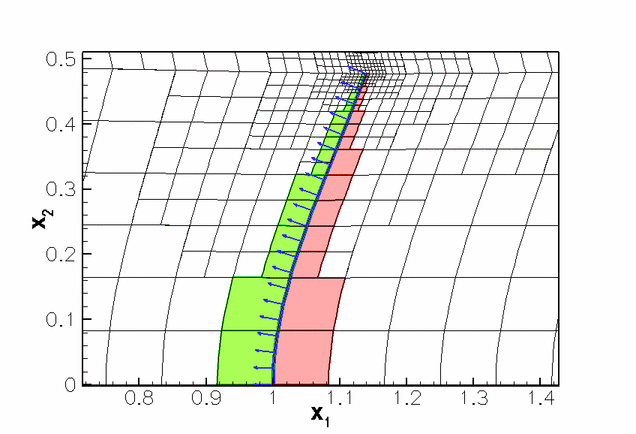The red and green elements are the fluid elements adjacent to the fluid mesh boundaries 4 and 5 (i.e. the "front" and "back" of the leaflet), respectively. The normal vectors (shown in blue) point towards the upstream end of the channel so they point away from (rather than into) the fluid that is adjacent to the "front" (the red region). This is why we setElements near the `front' (red) and `back' (green) of the leaflet and the outer unit normal on the leaflet.FSIHermiteBeamElement::normal_points_into_fluid()=false(Admittedly, we used the former method to get this right and only documented the proper way to do it when writing this tutorial...)
- Quick and dirty:
- Use of faster solvers:
oomph-lib'sFSI preconditioner
The problem presented in this tutorial was used as one of the test cases foroomph-lib'sFSI preconditioner; see
Heil, M., Hazel, A.L. & Boyle, J. (2008): Solvers for large-displacement fluid-structure interaction problems: Segregated vs. monolithic approaches. Computational Mechanics.
The use of this preconditioner (which leads to much faster solution times) is described in another tutorial. However, the required source code is already part of the driver code and has simply been ignored in this tutorial. Feel free to experiment with the preconditioner by modifying the source code.
Exercises
- Confirm that choosing the wrong value for the flag
FSIHermiteBeamElement::normal_points_into_fluid()makes the leaflet move in the wrong direction as it perceives positive fluid tractions as negative ones and vice versa. Here is what you should get:Clearly, the normal points in the wrong direction and the tractions have the wrong sign. This can be made "consistent", however, by also swapping the association between the mesh boundaries and the leaflet's faces. I.e. if we associate mesh boundary 5 with the "front" via Deformation of the leaflet with the wrong choice of FSIHermiteBeamElement::normal_points_into_fluid(): The leaflet gets sucked towards the high-pressure region.
Deformation of the leaflet with the wrong choice of FSIHermiteBeamElement::normal_points_into_fluid(): The leaflet gets sucked towards the high-pressure region.
// Front of leaflet: face 0face=0;FSI_functions::setup_fluid_load_info_for_solid_elements<ELEMENT,2>
and mesh boundary 4 with the "back" via
// Back of leaflet: face 1face=1;FSI_functions::setup_fluid_load_info_for_solid_elements<ELEMENT,2>
the code gives the right results again (make sure you change the code in the problem constructor and in the actions after adaptation!) – sometimes two wrongs do cancel each other out!
- The animation of the flow field shows that the outflow boundary condition is applied "too close" to the leaflet: in the relatively short domain chosen here, the outflow is far from fully developed and as a result the imposition of a parallel flow leads to the development of a artificial outflow boundary layer.
Confirm that an increase in the downstream length of the domain (or a reduction in the Reynolds number) improves the situation. Artificial outflow boundary layer.
Artificial outflow boundary layer.
- The algebraic node-update technique employed in the
ChannelWithLeafletMeshforces all fluid nodes to move when the leaflet deforms. An increase in the downstream length of the fluid domain therefore leads to a significant increase in computational cost. Use the improved node-update technique suggested in the corresponding Navier-Stokes example (only move the nodes in the vicinity of the leaflet) to improve the efficiency of the code.
Acknowledgements
- This code was originally developed by Floraine Cordier.
Source files for this tutorial
- The source files for this tutorial are located in the directory:
demo_drivers/interaction/fsi_channel_with_leaflet/
- The driver code is:
demo_drivers/interaction/fsi_channel_with_leaflet/fsi_channel_with_leaflet.cc
PDF file
A pdf version of this document is available.